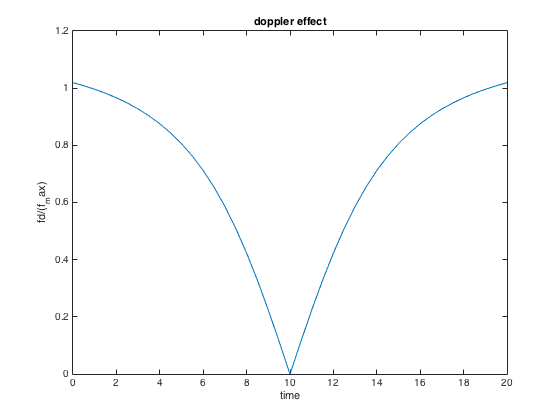

Tasksheet 4 exercise 1
close all;
clear all;
c=3*10^8;
k=100;
l=50;
v=10;
f=88*10^6;
t=0:0.5:20
y=100-v*t;
x=abs(y);
a=atan(x/50)
fd=v*c/f*sin(a);
fd_max=v*c/f*cos(0.5);
f_fd=fd/fd_max;
plot(t,f_fd);
xlabel('time');ylabel('fd/(f_max)');
title('doppler effect');
t =
Columns 1 through 7
0 0.5000 1.0000 1.5000 2.0000 2.5000 3.0000
Columns 8 through 14
3.5000 4.0000 4.5000 5.0000 5.5000 6.0000 6.5000
Columns 15 through 21
7.0000 7.5000 8.0000 8.5000 9.0000 9.5000 10.0000
Columns 22 through 28
10.5000 11.0000 11.5000 12.0000 12.5000 13.0000 13.5000
Columns 29 through 35
14.0000 14.5000 15.0000 15.5000 16.0000 16.5000 17.0000
Columns 36 through 41
17.5000 18.0000 18.5000 19.0000 19.5000 20.0000
a =
Columns 1 through 7
1.1071 1.0863 1.0637 1.0391 1.0122 0.9828 0.9505
Columns 8 through 14
0.9151 0.8761 0.8330 0.7854 0.7328 0.6747 0.6107
Columns 15 through 21
0.5404 0.4636 0.3805 0.2915 0.1974 0.0997 0
Columns 22 through 28
0.0997 0.1974 0.2915 0.3805 0.4636 0.5404 0.6107
Columns 29 through 35
0.6747 0.7328 0.7854 0.8330 0.8761 0.9151 0.9505
Columns 36 through 41
0.9828 1.0122 1.0391 1.0637 1.0863 1.1071
